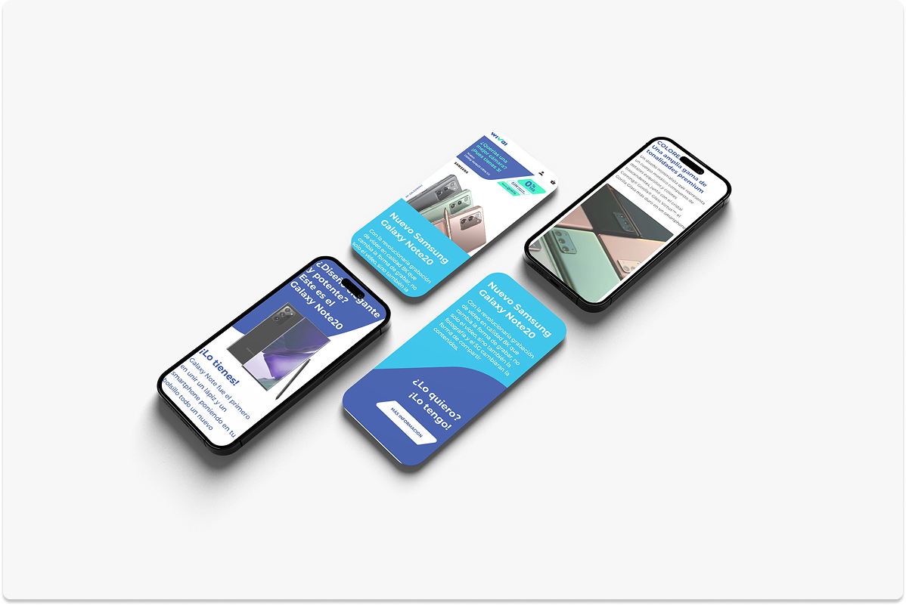
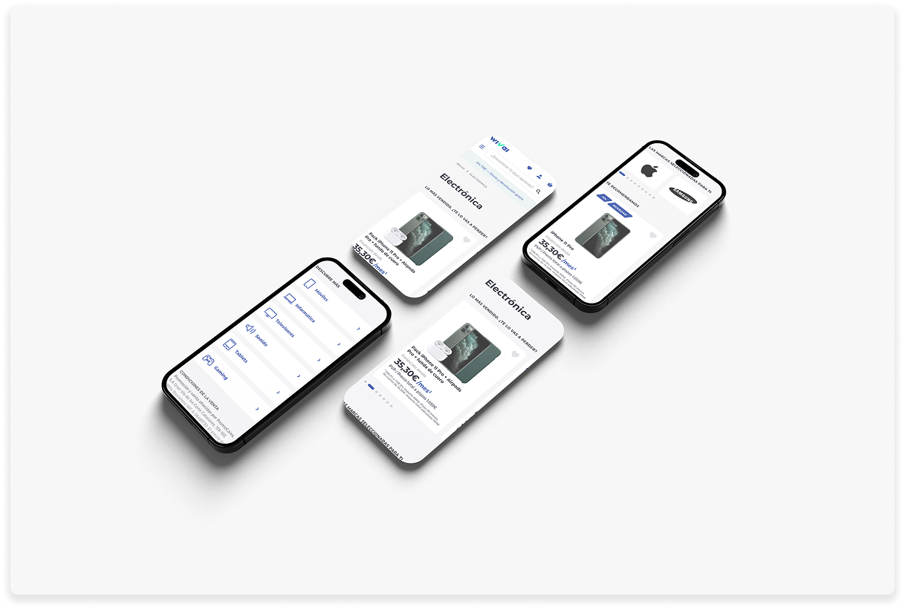
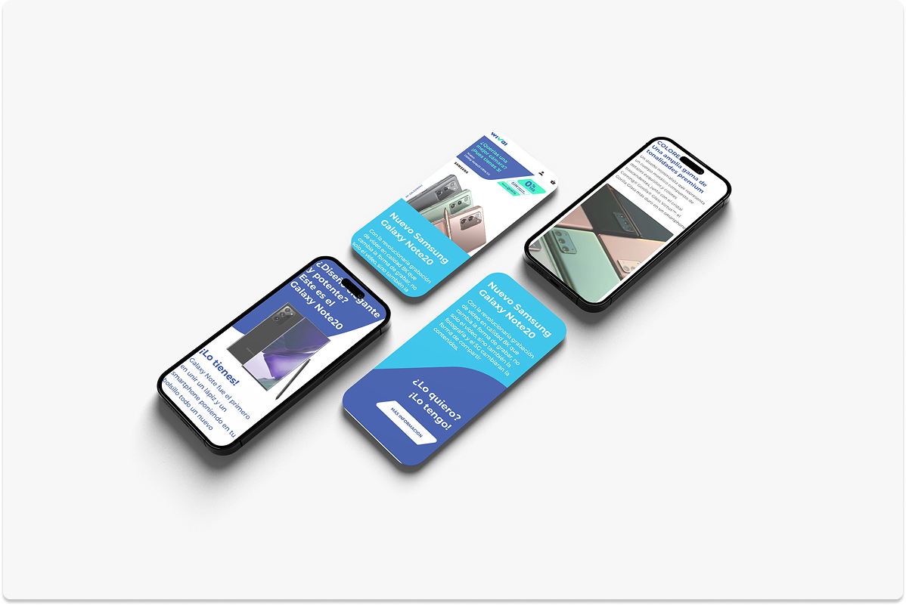
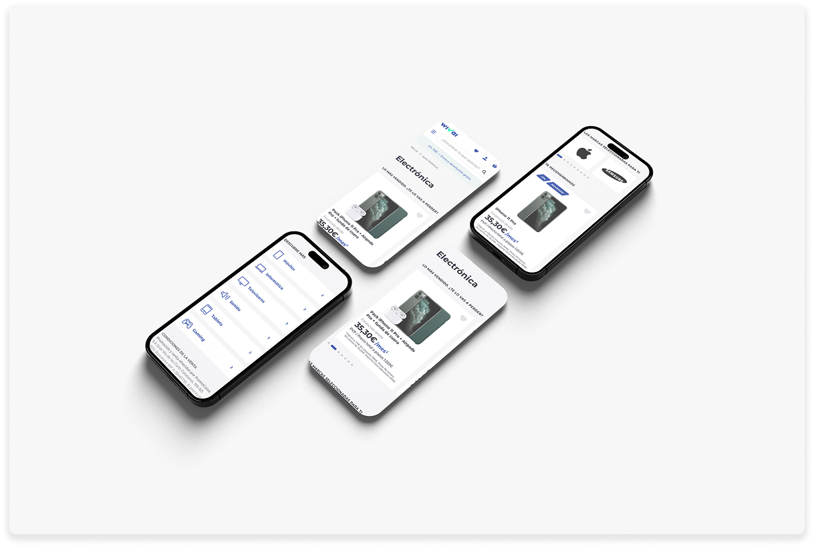

Wivai
Banking Giant's Move Into Retail E-Commerce
Overview
Wivai is CaixaBank's move into retail e-commerce—built around consumer tech products and designed to feel like a real store, not a bank feature. I led the design from brand creation through platform launch, defining the principles and experience foundations with a mobile-first approach.
With 70% of Spanish e-commerce traffic happening on mobile, we optimized for fast browsing, clear product comparison, and low-friction checkout—while using CaixaBank's credibility as an advantage (secure payments, buyer protection) without making the UI feel “banky”.
The Challenge
The hard part was earning trust as a new tech retailer and making high-consideration purchases feel safe and simple on mobile. That meant clear pricing and delivery info, strong product photography/specs, and a checkout that didn't turn into a form-filling marathon—plus tight integration with CaixaBank payments without forcing the bank brand into every pixel.
Our Approach
We positioned Wivai as discovery plus convenience—not competing on price alone, but on curation and ease. The strategy centered on three pillars:
Mobile-First Everything
With 70% of Spanish retail traffic on mobile, we designed for thumb zones, infinite scroll, and one-handed navigation. Desktop was an adaptation, not the starting point.
Trust Through Transparency
Real products, real photography, honest pricing. CaixaBank's financial credibility became an asset—secure payments, buyer protection, and customer service they already knew.
Discovery Over Search
Visual product cards, smart recommendations, trending categories. Help customers find things they didn't know they wanted, not just search for what they already know.
Mobile Experience
Designed for 70% mobile traffic with thumb-friendly navigation, infinite scroll product discovery, and one-tap CaixaBank payment integration for existing customers.
 



Desktop Experience
Desktop was designed as an adaptation of mobile-first principles: clear hierarchy, strong product storytelling, and fast paths to checkout—without turning the UI into a cluttered marketplace wall.
Impact
Wivai helped CaixaBank enter retail e-commerce with a brand and platform that felt credible from day one. Mobile-first discovery and simplified purchase flows reduced friction, increased engagement, and set the foundation for scalable growth.